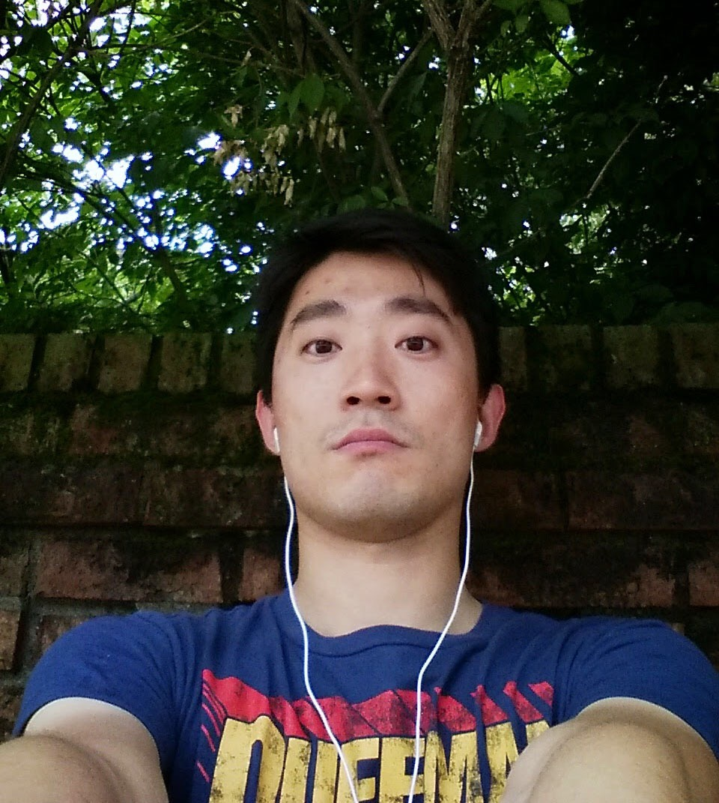

Thank you for visiting.
I am a 4th year graduate student in University of Kencutky. My two majors are biochemistry (PhD) and statistics (MA). The focus of my research is
NMR reference correction. Don't let the unfamiliar terms scare you. What I am doing, in simple words, is using the statistical methods and computational power
to analyse biomolecular data.
Data are data, they are pieces of puzzle that wait us to put together and form a beautiful vista. And lucky for me, this is my job. For the first two years of
my graduate school, I was focus on taking biochemical courses. From the third year, I join the statistical department juxtapositionally with my biochem PhD
program. Why? Because I reached the bottleneck of my analysis, and my computational power and biochemistry background could not help me move further. It's hard.
People couldn't understand me, they are perceiving me as the chimera, and questioning how I can manage to excel in two different fields without compasate one or the
other. I don't know, by working hard? ¯\_(ツ)_/¯ One thing I know is being unique is a blessing, since the synonyms are unrevaled, matchless and inimitable, and
indeed I am. “All I do is keep on running in my own cozy, homemade void, my own nostalgic silence. And this is a pretty wonderful thing. No matter what anybody
else says.”
You bet, I like to run. Never thought I would be a sports enthusiastic, but I couldn't help to run every single day. There're three benefits of running. First,
it keeps me healthy and trimmed. I have always been thin, however, after running for nearly five years I become really fit. Before I was just a skinny Asian, now
I am a confident young man with an all-can-do attitude. Secondly, running improves mood. Almost all of us have experienced burnt-out before: have no
motivation for doing anything and drag through the days. It all chages after the second half of my running, like eagles my strength has renewed and I run and
not grow weary. This activity practices my perseverance and resolution, since whenever I step on the my running track, there will be no turn-back. Scientific
research from Cambridge University demonstrate that running is a potent cerebral enhancer which sparks neurogenesis the grwth of new brain cells. On the other hand,
running is also a better organic antidepressant than any from a phamacist. It works perfectly for me.
Summer 2015. Running in Lexington, KY
|  |